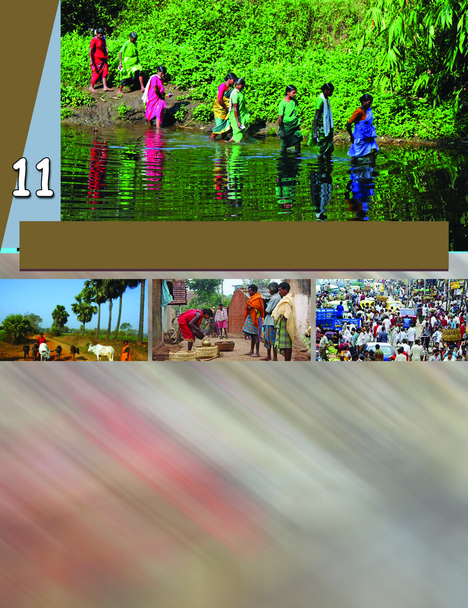
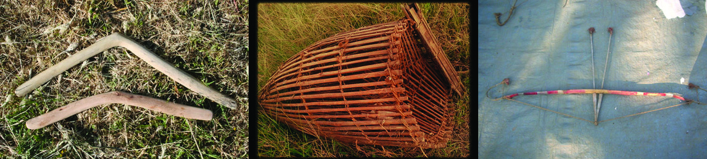
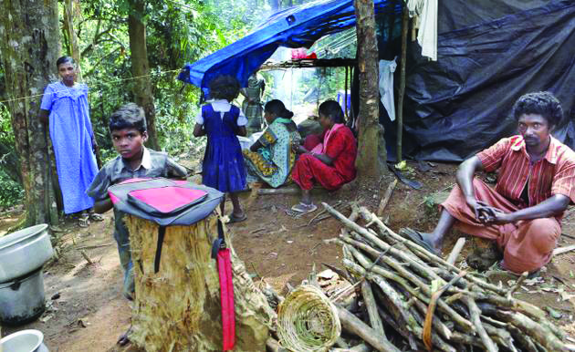
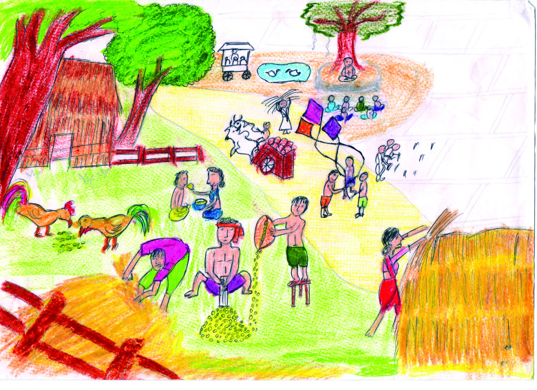
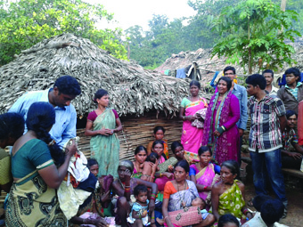
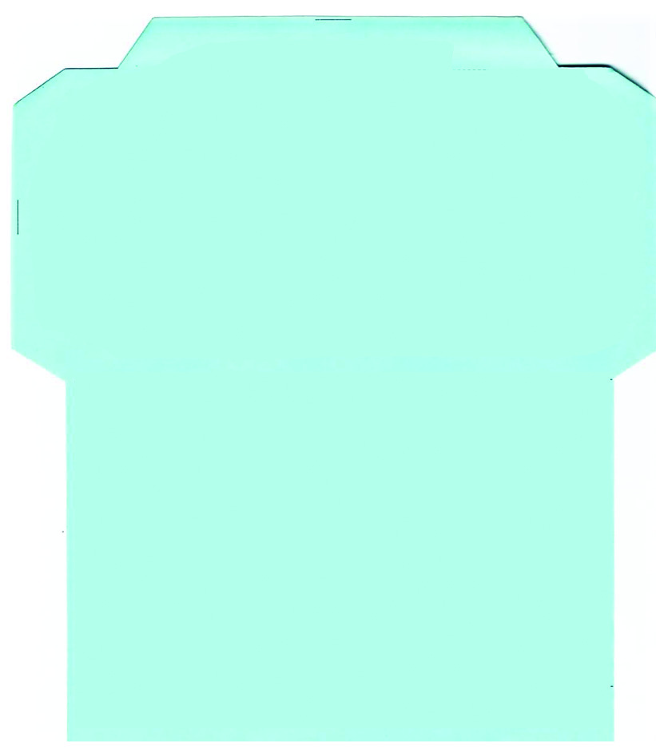
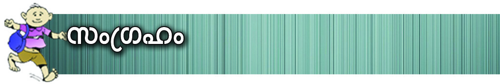
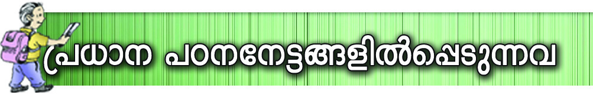
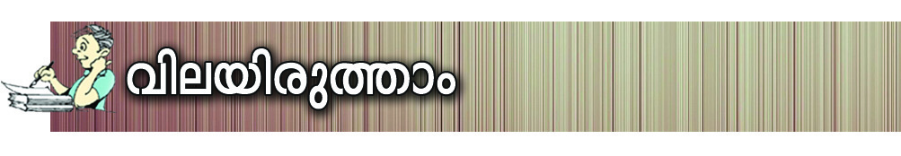
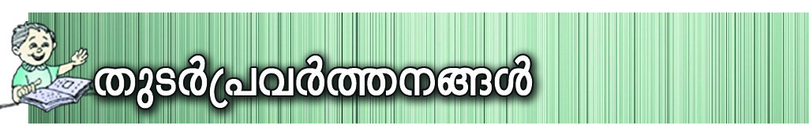

kaq-l-Po-hn-X-Ønse sshhn[yw
Cu aq∂p Nn{X-߃ {i≤n®v t\m°p-I. Ch
GsX√mw P\-hn-`m-K-ß-fp-ambn _‘-s∏´
hbmWv?
tIcf kaq-l-Ønse aq∂v P\-hn-`m-K-ß-fpambn
_‘-s∏´ Cu Nn{X-߃ Ah-cpsS ssZ\wZn\
Pohn-X-sØ {]Xn-^-en-∏n-°p∂p.
CØcw hyXykvX Np‰p-]mSp-Ifpw Pohn-X-co-Xn-
Ifpap≈ P\-hn-`m-K-ß-sf-°p-dn®v Hc-t\z-j-W-am-
bmtem? AXp-hgn \ap°v kaq-l-Øns‚
sshhn[y߃ a\- n-em-°m≥ {ian-°mw.
Page 61

Page 62


kmaq-ly-imkv{Xw
158
kaq-l-Po-hn-X-Ønse sshhn[yw
12345678901234567890123456789012123456789012345678901234567890121234567890123456789012345678901
12345678901234567890123456789012123456789012345678901234567890121234567890123456789012345678901
12345678901234567890123456789012123456789012345678901234567890121234567890123456789012345678901
12345678901234567890123456789012123456789012345678901234567890121234567890123456789012345678901
12345678901234567890123456789012123456789012345678901234567890121234567890123456789012345678901
12345678901234567890123456789012123456789012345678901234567890121234567890123456789012345678901
12345678901234567890123456789012123456789012345678901234567890121234567890123456789012345678901
tIc-f-Ønse tKm{X-k-aq--l-ß-fn-sem-∂p-ambn
_‘-s∏´ Hcp Nn{X-amWnXv.
tKm{X-k-aq-l-߃°v X\-Xmb Pohn-X-co-Xn-
Ifp≠v. \ΩpsS tZisØ BZy-Ime kaq-
l-ß-fpsS ]n≥ap-d-°m-cm-Wn-h¿. C∂v
Chcn¬ `qcn`mKw t]cpw s]mXp-sh ImSp-
I-fntem Ip∂n≥ apI-fntem Dƒ{]-tZ-i-ß-
fntem H‰-s∏´ Xmgvh-c-I-fntem Xma-kn-°p-
∂p-sh∂p am{Xw.
tIc-f-Ønse hnhn[ tKm{X-h¿K-ß-sf-°p-dn®v \n߃
tI´n-´p≠m-hpw. Hm¿Øp-t\m°n Nne tKm{X-h¿K-ß-
fpsS t]cp-Iƒ Is≠-Øp-I.
]Wn-b¿
IpdnNy¿
tKm{X-k-aq-l-Øns‚ khn-ti-j-X-Iƒ
C\n tKm{X-h¿K-ß-fpsS kmaq-ln-I-Po-hn-X-Ønse khn-
ti-j-X-Iƒ Is≠-Ømw.
1976 ¬ t`Z-KXnsNbvX ]´n-I-
PmXn˛]´n-I-h¿K \nb-a-{]-Imcw
tIc-f-Ønse hnhn[ `mK-ß-fn-
embn 35 tKm{X-kaq-l-ß-fp-≠v.
]e Pn√-I-fn¬ NnX-dn-°n-S-°p∂
]Wnb¿ BWv FÆ-Øn¬ IqSp-
X¬.
tIc-f-Ønse
tKm{X-k-aq-l-߃
Hcp s]mXp-{]-tZ-iØv Xma-kn-
°p-Ibpw X\Xv `mj kwkm-
cn-°p-Ibpw sNøp∂ P\-hn-`m-
K-amWv tKm{X-k-aqlw. Ah¿
khn-ti-j-amb BNm-c\p-jvTm-
\-߃ ]n¥p-S-cp-∂p.
tKm{Xw
tKm{X-k-aqlw
tKm{X-h¿K-Øn¬s∏-Sp-∂-h¿ s]mXpsh ae-
tbmcß-fn-tem h\-ß-fntem Ip∂n≥ap-I-fn-tem
H‰-s∏´p InS-°p∂ Xmgvh-c-I-fntem BWv Xma-
kn-°p-∂-Xv. Hmtcm tKm{Xkaq-lhpw Hcn-SØv Iq´-
ambn Pohn-°p-∂p. a‰p kaq-l-ß-fn¬ \n∂v thdn-´
Pohn-XamWv Ah¿ \bn-°p-∂-Xv.
Page 63



Ãm≥tU¿Uv VI
159
kaq-l-Po-hn-X-Ønse sshhn[yw
h\-hn-`-h-߃ tiJ-cn®pw ]c-º-cm-K-X-co-Xn-bn¬ Irjn
sNbvXpamWv tKm{X-kaql-߃ Pohn-°p∂Xv. Ch¿°n-
S-bn¬ ]ecpw ]c-º-cm-KX Ipe-sØm-gn-ep-Iƒ sNøp-∂-h-
cm-Wv.
Hmtcm tKm{X-k-aq-l-Øn\pw Ah-cp-tS-Xmb `mj-bp-≠v.
Ch X\-Xmb en]n-I-fn-√mØ kwkmc`mj-bm-Wv.
tIc-f-Ønse aebkaqlw D]-tbm-Kn-°p∂ Nne ]Z-߃ {i≤n-
°p-I.
IpSpw-__‘-߃ kqNn-∏n-°p∂ ]Z-ß-fmWnh. \Ω-fn∂v D]-
tbm-Kn-°p∂ ]e ]Z-ß-fp-am-bn Chbv°v kmay-ant√?
tKm{X-k-aq-l-߃°v Ah-cp-tS-Xmb khn-ti-j Pohn-X-co-Xn-bp-
≠v. {]Ir-Xn-tbmSv CW-ßn-°-gnbp∂-h-cm-W-h¿. Ah-cpsS kmaq-
ln-I-Po-hnXw cq]-s∏-Sp-Øp-∂-Xn¬ `qan-imkv{X {]tXy-I-X-Iƒ°v
kp{]-[m\ ]¶p-≠v.
th≠n-bmcv
:
`mcy
thØmcv
:
`¿Ømhv
A∏≥
:
A—≥
t]∏≥
:
A∏q-∏≥
tamfmcv
:
aIƒ
tam\mcv
:
aI≥
B®n
:
tN®n
Nm´≥
:
tPyjvT≥
1 .....................................................................
2 .....................................................................
3 .....................................................................
Nn{X-߃ {i≤n-°p-I.
Page 64



kmaq-ly-imkv{Xw
160
kaq-l-Po-hn-X-Ønse sshhn[yw
Cu D]-I-c-W-߃ tKm{X-h¿K°m¿ F¥n-s\-√m-am-bn-cn-°Ww
D]-tbm-Kn-®Xv? Hmtcm-∂n-t‚bpw D]-tbmKw Nn{X-Øn-\-Sn-bn¬
FgpXnt\m°q.
tKm{X-k-aq-l-°m-cpsS D]-I-c-W-߃ Ah-cpsS Np‰p-]m-Sp-I-tfmSv
_‘-s∏-´-Xm-sW∂p hy‡-am-bnt√?
tKm{X-k-aq-l-߃ Ah-cpsS Ncn-
{Xtam Adn-hp-Itfm FgpXn
hbv°m-dp-≠m-bn-cp-∂n-√. AXp-
sIm≠pXs∂ tKm{X-k-aq-l-ß-
fpsS \m´-dn-hp-Itfm \mS≥]m-´p-
Itfm sFXnly-ßtfm a‰p-≈-
h¿°v s]mXpsh ]cn-Nn-X-a-√.
Ah-cpsS Iem-cq-]-ß-fpw A\p-
jvTm-\-ßfpw am‰-ß-tfm-sS-bm-sW-
¶nepw C∂pw \ne-\n¬°p-∂p≠v.
tIc-f-Ønse Hcp tKm{X-hn-`m-K-amb ae-th-S-cpsS Hcp {]IrXn
KoXw {i≤n-°q...
C®-®-sa¥p sNbvtX-teem
Hcp ao¥p-NØp t]mtb-teem
NØ-Ωo¥p F¥p sNbvtX teem
Hcp ]c-¥p-dm-©n-t∏mtbteem
B ao¥p F¥p sNbvtX-teem
Ccp-fp-a-dn¥p t]mtb-teem
AΩ-c-sa¥p sNbvtX-teem
sNdp-ao-¥p-Xm\pw t]mtb-teem
Ie-ºp-tgev Xm¥p-t]m-tb-teem
Ie-ºp-tgev Xm¥p-t]m-tb-teem
tIc-f-Ønse tKm{X-k-aq-l-߃°n-S-bn¬ {]Nm-c-Øn-ep≈ CØcw ]m´p-
Iƒ tiJ-cn®v ¢mkn¬ Ah-X-cn-∏n-°q.
Page 65



Ãm≥tU¿Uv VI
161
kaq-l-Po-hn-X-Ønse sshhn[yw
tKm{X-k-aq-l-߃ Hcp-an®p Xma-kn-°p∂
ÿew "Ducv' F∂-dn-b-s∏-Sp-∂p. Hmtcm
Ducn\pw Hcp t\Xm-hp-≠m-Ipw. At±-lsØ
"Ducp-aq-∏≥' F∂v BZ-c-thmsS hnf-n-°p-∂p.
Ducnse `cWØn\v t\XrXzw sImSp-°p-∂Xv
aq-∏-t\m aq∏-\-S-ßp∂ apXn¿∂ AwK-ß-fpsS
Hcp kan-Xntbm Bbn-cn-°pw. hnhmlw,
X¿°-߃, A\p-jvTm\apd-Iƒ F∂n-h-bn-
se√mw Xocp-am-\-saSp-°m≥ aq∏t\m apXn¿∂
kan-Xnt°m ]c-am-[n-Imcw D≠m-bn-cn-°pw.
\nßfpsS kao-]-{]-tZ-i-sØhn-sS-sb-¶nepw tKm{X-k-aqlw Xma-
kn-°p∂ "Ducv' Ds≠-¶n¬ kμ¿in-®v Ah-cpsS Pohn-X-Ønse
khn-ti-j-X-I-sf-°p-dn-®-dn-bm≥ {ian-°p-I.
{Kma-k-aqlw
]Xn-s\m-∂p-h-b- p-Im-cn-bmb ao\ hc® Nn{X-am-Wn-Xv. ao\
kz¥w tZi-sØ-bmWv Nn{X-Øn¬ {]ta-b-am-°n-bn-´p-≈-Xv. Cu
Nn{Xw kq£va-ambn \nco-£n-°p-I. Nn{X-Øn¬ ao\ tcJ-s∏-Sp-
Ønb khn-ti-j-Po-hn-X-co-Xn-Iƒ Fs¥-√m-amWv? Fgp-Xp-I.
Page 66


kmaq-ly-imkv{Xw
162
kaq-l-Po-hn-X-Ønse sshhn[yw
Irjn-tbmSv tN¿∂ {]hrØn-Iƒ :
................................................................................................................................
................................................................................................................................
................................................................................................................................
................................................................................................................................
a‰p Imcy-߃ :
................................................................................................................................
................................................................................................................................
................................................................................................................................
................................................................................................................................
Cu khn-ti-j-X-I-fn¬\n∂v ao\-bpsS kaq-lsØ a\- n-em-
°m≥ ]‰p-∂pt≠m? AØcØnep≈ kaq-lsØ \n߃ F¥p
-hn-fn°pw?
{Kmakaq-l-Øns‚ {][m\ khn-ti-j-X-Iƒ Is≠Øn
]´nIbm°q.
]c-º-cm-KX {Kma-k-aq-l-Øns‚ khn-ti-j-X-Iƒ Fs¥-√m-am-
sW∂v ]cn-tim-[n-°mw.
{Kma-{]-tZ-i-ß-fn¬ Pohn-°p-∂-h¿°v ]c-kv]cw ASp-Ø-
dn-bmw. Ah¿ XΩn¬ \√ ASp∏w D≠m-bncn-°pw.
{Kmao-W-cpsS thjw efn-X-am-bn-cn-°pw. Pohn-X-co-Xn-Iƒ
k¶o¿W-a-√.
Irjnbpw A\p-_‘ sXmgn-ep-I-fp-amWv ]c-º-cm-KX {Kma
kaq-l-ß-fn¬ apJyw.
ssIsØm-gn-ep-Iƒ, I∂p-Im-enhf¿Ø¬, Ic-Iuie
hkvXp-\n¿am-Ww XpS-ßn-b-hbpw {Kmao-W-cpsS D]-Po-h-\-
am¿K-ßfm-Wv.
Page 67


Ãm≥tU¿Uv VI
163
kaq-l-Po-hn-X-Ønse sshhn[yw
12345678901234567890123456789012123456789012345678901234567890121234567890123456789012345678901
12345678901234567890123456789012123456789012345678901234567890121234567890123456789012345678901
12345678901234567890123456789012123456789012345678901234567890121234567890123456789012345678901
12345678901234567890123456789012123456789012345678901234567890121234567890123456789012345678901
12345678901234567890123456789012123456789012345678901234567890121234567890123456789012345678901
12345678901234567890123456789012123456789012345678901234567890121234567890123456789012345678901
12345678901234567890123456789012123456789012345678901234567890121234567890123456789012345678901
{Kma-ß-fn¬ \ne-\n-∂n-cp∂ Nne sXmgn-ep-Iƒ
Is≠-Øm-\m-hptam?
$ a¨]m-{X-\n¿amWw
$
$
$
$
$
]cº-cm-KX {Kma-ß-fn¬ Iq´p-Ip-Spw_hyh-ÿbv°v Gsd
{]m[m-\y-ap-≠mbncp∂p.
]e {KmaoW-Iq-´p-Ip-Spw-_-߃°pw Ah-cp-tS-Xmb Ipe-
sØm-gn¬ D≠m-bn-cp-∂p.
Ab¬]°_‘-Øn\v {Kmaw {]m[m\yw \¬Ip-∂p. kpJ-
Ønepw ZpxJ-Ønepw Ah¿ HØp--tN-cp-∂p. NS-ßp-I-fnepw
D’h-ß-fnepw s]mXpsh F√m-hcpw ]s¶-Sp-°p-∂p.
{Kmao-W¿ ]c-kv]cw klm-bn-°p-Ibpw klI-cn-°p-Ibpw
sNøp-∂p.
D’-h-߃°v {KmaoWPohn-X-Øn¬ henb {]m[m-\y-ap-
≠v. sImbvØp’-h-߃ {Kma-Ønse {][m\ BtLm-j-
am-bn-cp-∂p.
C¥y C∂pw {Kma-ß-fpsS \mSm-Wv. F∂m¬ ]e {Kma-ßfpw
]´-W-ß-fmbpw \K-c-ß-fmbpw amdp-∂p-≠v. ]gbIme {Kma-ß-
fpsS khn-ti-j-X-Iƒ C√m-Xm-Ip-∂Xpw ImWm-\m-hpw.
amdp∂ {Kma-߃
{Kma-߃°v C∂p h∂p-sIm-≠n-cn-°p∂ am‰-߃ Xncn-®-dn-bm-
\m-hp-∂pt≠m? apI-fn¬ N¿®sNbvX ]c-º-cm-KX {Kma-ß-fpsS
khn-ti-j-X-I-fn¬ Fs¥ms° am‰-ß-fmWv C∂sØ {Kma-ß-
fn¬ {]I-S-am-hp-∂-Xv?
{Kma-ßfn¬ ]eXpw ]g-b cq]-Øn¬Øs∂ \ne-sIm-≈p-∂n√.
{Kma-߃ ]´-W-ß-fmbpw ]´-W-߃ \K-c-ß-fm-bpw Nne \K-c-
߃ h≥\-K-c-ß-fmbpw amdp-∂p. \Kcw {Kma-ß-fn-ep-≈hsc
sXmgn¬, hnZym-`ymkw XpS-ßnb Imcy-ß-fneqsS BI¿jn-
°p∂p. apwss_, U¬ln, sIm¬°-Ø, sNss∂, _wK-fqcp,
Page 68



kmaq-ly-imkv{Xw
164
kaq-l-Po-hn-X-Ønse sshhn[yw
\K-c-k-aqlw
\nß-ƒ Hcp h≥\-Kcw kμ¿in-®n-´pt≠m?
Bdmw ¢mkp-Im-cn-bmb jo\ kplr-Ømb A¿®\bv°v Ab®
IØv hmbn°q.
sIm®n XpS-ßnb \-K-c-ß-fn-te°v hym]-I-amb IpSn-tb-‰-amWv
\S-°p-∂-Xv.
\nß-fpsS {Kmaw/kao-]-{Kmaw \nco-£n®v apI-fn¬ N¿®sNbvX ]c-º-cm-
KX{Kma-ß-fpsS khn-ti-j-X-I-fn¬\n∂v hyXy-kvX-ambn Fs¥m-s°-bmWv
D≈-sX∂p Is≠Øn Ipdn∏v Xbm-dm-°p-I.
"{]nb-s∏´ A¿®\bv°v,
Rm\o IsØ-gp-Xp-∂Xv _wK-fqcp \K-c-
Øn¬\n∂mWv. C∂v _wK-fqcp C¥y-bnseXs∂ Hcp
{][m\ \K-c-ambn amdn-bn-cn-°p-∂p. Ign™ Ac\q‰m-
≠p- sIm≠m-Wt{X Cu {]tZiw Cßs\ Hcp h≥\-K-c-
ambn amdn-b-Xv. Npcp-ßnb Imew-sIm≠v alm-\-K-c-
ambnØo¿∂ Hcp {]tZ-i-am-WnXv. Fhn-sSbpw BImiw
IpØn-Øp-f-bv°p∂ sI´n-S-ß-fm-Wv. tIm¨{Io‰v ImSp-I-
sf∂v h≥\-K-c-ßsf hnf-n-°p-∂Xv F{X icn-bm-Wv. sI´n-
S-ß-fpsS Xmsg\n∂v t\m°n-bm¬ tate A‰w ImWm-\m-
hn-√.
\nc-Øp-I-f-[n-Ihpw c≠p hcn∏mX-I-fm-Wv. Atßm-´p-an-tßm-
´p-ap≈ hml-\-߃ Hmtcm ]mX-bn-eq-sSbpw t]mIp-∂p.
\nc-ap-dn-bmØ hml-\-ß-fpsS Hgp-°mWv GXp t\cØpw.
AXp-sIm≠v Xs∂ FhnsS\n∂pw tdmUv apdn®pIS-°m≥
]‰n-√. sh≈ hc-bn´ CS-ß-fn¬ knKv\¬ shfn®w
t\m°ntb \ncØv apdn-®p-I-S-°m≥ ]mSp≈q. Cs√-¶n¬
IY Ign-bpw.
hml-\-ß-fpsS B[nIyw ChnsS ]cn-ÿnXnaen-\o-I-c-W-
Øn\v Imc-W-am-Ip-∂p. hml-\-ßfpw ^mIvS-dn-Ifpw ip≤-
hmbp C√m-Xm-°p-∂p≠v. ip≤-P-e-£m-ahpw _wK-fq-cnse
apJy-{]-iv\-ß-fn-sem-∂m-Wv.
\K-c-Øn¬ ^vfm‰p-Itf ImWp-∂p-≈q. henb hn√-Ifnepw
^vfm‰p-I-fn-epamWv ]ecpw Ign-bp-∂-Xv. Hcp ^vfm‰n¬ Ccp-
\q-tdmfw IpSpw-_-߃ Ign-bp-∂p≠v F∂mWv ]d-™p-
tIƒ°p-∂-Xv. henb tImtf-Pp-Ifpw kvIqfp-Ifpw [mcm-
fw. _wK-fqcp \K-c-Øn¬ ]m¿°p-Ifpw ]qt¥m-´-ß-fp-ap≠v,
ImgvN-_w-•m-hp-Ifpw ayqkn-b-ßfpw F{X I≠mepw aXn-bm-
hn-√. kXy-Øn¬ Cu \K-c-Øn¬ C\nbpw Iptd \mfp-
Iƒ Np‰n-°-d-ßm-\mWv tXm∂p-∂-Xv. F¥m A¿®\
hcpt∂m?
kvt\l-tØmsS
jo\
_wK-fqcp
16 sabv 2014
Page 69

Ãm≥tU¿Uv VI
165
kaq-l-Po-hn-X-Ønse sshhn[yw
jo\-bpsS IØp hmbn-®-t∏mƒ Hcp \K-c-Øns‚ Nn{Xw \nß-
fpsS a\- nepw D≠m-bnt√? \K-c-ß-fpsS khn-ti-jkz`m-h-ß-
fpsS Hcp Nm¿´v \ap-°p-≠m-°mw.
\Kcw : khn-ti-j-X-Iƒ
sshhn-[y-ß-fpsS tI{μw
˛ ]e -`m-j-Iƒ kwkm-cn-°p∂p.
˛ ]e thj-߃ AWn-bp∂p.
˛ hnhn[ `£WcoXn-Iƒ ]n¥p-S-cp∂p.
]e-hn[ sXmgn-ep-I-fpsS tZiw
˛ hyh-km-b-tØmSpw hym]m-c-tØmSpw _‘-s∏´
sXmgn-ep-Iƒ.
˛ sXmgn-ep-Iƒ hnhn[ kmº-ØnI˛kmaq-lnI
h¿K-ßsf (Classes) D≠m-°p-∂p.
˛ sXmgn¬ kwL-S-\-Iƒ cq]w-sIm-≈p-∂p.
henb sI´n-S-ß-fpsS tI{μw
˛ ^vfm‰p-Iƒ
˛ amfp-Iƒ
˛ kq∏¿am¿°-‰p-Iƒ
˛ _w•m-hp-Iƒ
\mK-cnIPohn-X-co-Xn-Iƒ
˛ ^mj-\p-Iƒ
˛ B[p-\nI Pohn-X-ssi-en-Iƒ
˛ sshhn-[y-]q¿W-amb Pohn-X-ssi-en-Iƒ
IqSp-X¬ P\km{μX
tNcn-{]-tZ-i-߃
Page 70


kmaq-ly-imkv{Xw
166
kaq-l-Po-hn-X-Ønse sshhn[yw
12345678901234567890123456789012123456789012345678901234567890121234567890123456789012345678901
12345678901234567890123456789012123456789012345678901234567890121234567890123456789012345678901
12345678901234567890123456789012123456789012345678901234567890121234567890123456789012345678901
12345678901234567890123456789012123456789012345678901234567890121234567890123456789012345678901
12345678901234567890123456789012123456789012345678901234567890121234567890123456789012345678901
12345678901234567890123456789012123456789012345678901234567890121234567890123456789012345678901
12345678901234567890123456789012123456789012345678901234567890121234567890123456789012345678901
12345678901234567890123456789012123456789012345678901234567890121234567890123456789012345678901
\K-c-Ønse {]iv\-߃
\Kcw ]e-tcbpw BI¿jn-°p-∂p. ]e¿°pw
\Kcw CjvS-s∏-Sm-Xn-cn-°m\pw Imc-W-ß-
fnt√? Cu Nn{Xw t\m°q.
\K-c-Ønse KXm-K-X-°p-cp-°ns‚ Hcp Nn{X-
am-Wn-Xv. hml-\-ß-fpsS B[nIyw hmbp-a-en-
\o-I-c-W-Øn\v Imc-W-am-Ip-∂p. AXv ]e
tcmK-߃°pw hgn-sbm-cp-°p-∂p.
\K-c-Øn¬ ]e-hn[ kuI-cy-ß-fp≠v F∂Xv
Hcp bmYm¿Yy-amWv. F∂m¬ \Kcw ]e-hn[
{]iv\-ß-fpsSbpw tI{μw IqSn-bm-sW-∂-dn-bmtam?
\KcPohnXw Nne¿°v ZpjvI-c-amWv. kpJ-ku-I-cy-ß-fn¬
PohnXw BtLm-jn-°p-∂hcpw tNcn-I-fnepw sXcp-thm-cß-fnepw
Ign-bp∂hcpw \K-c-Øn-ep-≠v. \K-c-Øn-se ]e {]iv\-ßfpw
F√m-h-tcbpw _m[n-°p∂-Xm-Wv. Ah GsX-√m-am-sW∂v \ap°v
Is≠-Ømw.
\K-c-Øn-se
{]iv\-ßfpsS
]cn-lm-c-am¿K-߃
Nn´-tbm-sS-bp≈ Bkq-{XWw.
]mcn-ÿn-XnI{]iv\-߃ D≠m-°mØ \n¿amW
{]h¿Ø-\-߃.
]m¿∏n-S-\bw.
Pohn-Xw kpK-a-am-°m-\p≈
ASn-ÿm\ kuI-cy-߃.
\K-c-Ønse ]e-hn[- {]iv\-߃ ]{X-hm¿Ø-I-fn¬ \n∂v tiJ-cn-°p-I.
KXm-K-X-°p-cp-°v, tNcn-Iƒ, elcn]Zm¿∞ßfpsS D-]-tbm-Kw, Ip‰-Ir-
Xy-߃ XpS-ßn-bhsb°p-dn-®p≈ ]{X-hm¿Ø-Iƒ D]-tbm-Kn®v sImfmjv
D≠m°n ¢mkn¬ {]Z¿in-∏n-°p-I.
\K-c-Ønepw {Kma-Øn-ep-ap≈ {]iv\-߃°v F¥mWv ]cn-lmcw?
kwL-ß-fmbn N¿® sNøp-I. N¿®bv°v Cu Nm¿´v D]-tbm-Kn-
°mw.
Page 71



Ãm≥tU¿Uv VI
167
kaq-l-Po-hn-X-Ønse sshhn[yw
hnhn[ Pohn-X-co-Xn-Iƒ
khn-ti-j-X-Iƒ
tKm{Xk-aqlw
{Kma-k-aqlw
\K-c-k-aqlw
]c-º-cm-KX
{Kma-Øns‚
khn-ti-j-X-Iƒ
{Kma-k-aq-l-Øn¬
h∂
am‰-߃
khn-ti-j-X-Iƒ
]cn-lm-c-am¿K-߃
\mK-cn-I-{]-iv\-߃
`qcn-`mKw tKm{X-k-aq-lßfpw ae-tbm-c-ß-fntem a‰v
Dƒ{]-tZ-i-ß-fntem BWv Pohn-°p-∂-Xv.
tKm{X-k-aq-l-Øn\v X\-Xmb kwkvIm-chpw Pohn-X-co-Xn-
bp-ap-≠v.
tKm{X-k-aq-l-Øns‚ `mjbpw kwkvIm-chpw hmsam-gn-
bneqsS ssIam‰w sNø-s∏-Sp-∂-h-bm-Wv.
{Kma-Øns‚ khn-ti-j-XI-fmWv {]mY-anI _‘w, Irjn-
bn-e-[n-jvTn-X-amb sXmgn-ep-Iƒ, IpSpw_˛ Ab¬]-°-
_-‘-ß-fpsS {]m[m\yw, BtLm-j-ß-fpsS kzm[o\w
XpS-ßnbh.
kmaq-lnIsshhn[yw, sXmgn¬hn`-P\w, kmaq-lnI Ne-
\-£-a-X F∂n-h \K-c-k-aq-l-Øns‚ {]tXy-I-X-I-fmWv.
Page 72




kmaq-ly-imkv{Xw
168
kaq-l-Po-hn-X-Ønse sshhn[yw
tNcn-I-ƒ, aen-\o-I-cWw, KXm-K-X-°p-cp-°v XpS-ßn-b-h-bmWv
\K-c-k-aqlw t\cn-Sp∂ {][m\ {]iv\-߃.
Nn´-tbm-sS-bp≈ Bkq-{X-W-Øn-eqsS \K-c-Ønse an°
{]iv\-ßfpw ]cn-l-cn-°m≥ Ign-bpw.
tKm{X-k-aq-l-Øns‚ {]tXy-I-X-Iƒ Xncn-®-dn™v hni-Zo-
I-cn-°p-∂p.
{Kma-k-aq-l-Øns‚ khn-ti-j-X-Iƒ Xncn-®-dn™v hni-I-
e\w sNøp-∂p.
{Kma-k-aq-l-Øn¬ h∂ am‰-߃ Xncn-®-dn™v hni-Zo-I-cn-
°p∂p.
\K-c-k-aq-l-Øns‚ {]tXy-I-X-Iƒ Xncn-®-dn™v {Kmakaq-
l-ß-fp-ambn Xmc-Xayw sNbvXv hni-I-e\w sNøp-∂p.
\K-c-k-aqlw t\cn-Sp∂ {]iv\-߃ Xncn-®-dn-bp∂p. ]cn-
lm-c-am¿K-߃ \n¿tZ-in-°p∂p.
tKm{Xkaq-l-Øns‚ {]tXy-I-X-Iƒ Fs¥√mw?
{Kmakaq-l-Øn¬ h∂ am‰-߃ Xncn-®-dn™v hni-Zo-I-cn-
°p-I.
\K-c-Po-hnXw \cIXpey-amWv˛ Cu {]kvXm-h\tbmSv
\n߃ tbmPn-°p-∂pt≠m? \nß-fpsS DØcw \ymbo-I-
cn-°p-I.
Page 73



Ãm≥tU¿Uv VI
169
kaq-l-Po-hn-X-Ønse sshhn[yw
{Kma-k-aqlw
\K-c-k-aqlw
$
$
$
$
$
$
$
$
{Kmakaq-lØns‚bpw \K-c-k-aq-lØns‚bpw khn-ti-
j-X-Iƒ Xmc-Xayw sNbvXv ]´n-I-s∏-Sp-Øp-I.
\nß-fpsS kao]Øp≈ \Kcw kμ¿in®v AhnsS \ne-
\n¬°p∂ kmaq-ly-{]-iv\-ßsf°pdn®v dnt∏m¿´v Xbm-
dm-°p-I.
kqN-\Iƒ
$ KXm-K-X-°p-cp°v
$ tNcnIƒ
$ ]m¿∏n-S-kuI-cy-ß-fpsS A]-cym-]vXX
$ Pe-Zu¿e-`yX
tKm{X-k-aq-l-Øns‚ Iem-cq-]-߃, ]m´p-Iƒ F∂nh
tiJ-cn®v ]Xn∏v Xbm-dm-°p-I.
Page 74

kmaq-ly-imkv{Xw
170
kaq-l-Po-hn-X-Ønse sshhn[yw
]q¿W-ambn
`mKn-I-ambn
Xosc-bn√
tKm{X-kaq-l-Øns‚ khn-ti-j-X-Iƒ
hni-Zo-I-cn-°m≥ Ign-bpw.
{Kma-k-aq-l-Øns‚ khn-ti-jXIƒ
hni-Zo-I-cn-°m≥ Ign-bpw.
\K-c-k-aq-l-Øns‚ khn-ti-j-X-Iƒ
Xncn-®-dn-bm≥ km[n-°pw.
C∂sØ {Kma-ß-fn¬ h∂ am‰-߃
Xncn-®-dn™v ]´n-I-s∏-Sp-Øm≥ km[n-°pw.
{Kma˛-\-Kc kaq-l-߃ XΩn-ep≈
hyXym-k-߃ Xncn-®-dn-bm≥ km[n-°pw.
\Kckaqlw t\cn-Sp∂ {]iv\-߃
Xncn-®-dn-bm≥ km[n-°pw.
\Kc{]iv\-߃ ]cn-l-cn-°m≥ Nne
\n¿tZ-i-߃ \¬Im≥ Ign-bpw.
kzbw hne-bn-cpØmw
kzbw hne-bn-cpØmw
kzbw hne-bn-cpØmw
kzbw hne-bn-cpØmw
kzbw hne-bn-cpØmw